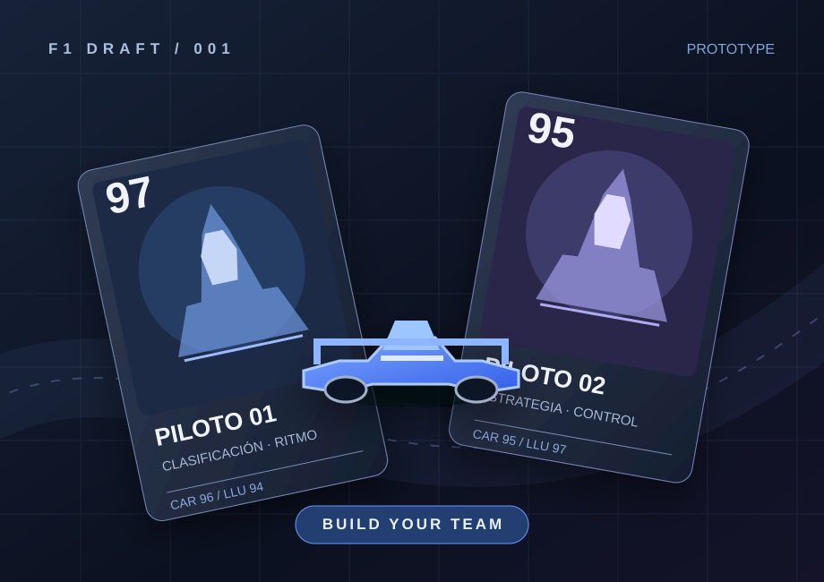

01.
Desarrollo web
Crear experiencias digitales funcionales, accesibles y fáciles de utilizar.
Hola, soy
Desarrollador web Técnico Superior en DAW
Me apasiona el desarrollo web y la creación de soluciones digitales que combinan funcionalidad, diseño y una buena experiencia de usuario. Mi objetivo es seguir aprendiendo, afrontar nuevos retos y aportar valor en proyectos tecnológicos.
01 / SOBRE MÍ
PERSONA · PROCESO · PROPÓSITO
Soy Fineas Havran, desarrollador web junior y Técnico Superior en Desarrollo de Aplicaciones Web (DAW).
Me interesa construir sitios y aplicaciones que resuelvan problemas reales, con interfaces claras, código organizado y atención a quienes los utilizan.
Entiendo cada proyecto como una oportunidad para experimentar, mejorar mis habilidades y aprender a tomar mejores decisiones técnicas.
Crear experiencias digitales funcionales, accesibles y fáciles de utilizar.
Explorar tecnologías, revisar decisiones y aplicar buenas prácticas de desarrollo.
Entender primero el reto para construir después una solución sencilla y útil.
02 / HABILIDADES
TECNOLOGÍA EN CONTEXTO
Tecnologías vinculadas a los proyectos incluidos y apartados editables para completar con tus conocimientos verificados.
Transparencia técnica. Las tecnologías que aparecen se vinculan al proyecto F1 Draft descrito en esta página. Las demás categorías se completan al confirmar tus conocimientos; no se asignan niveles ni porcentajes ficticios.
03 / PROYECTOS
TRABAJOS SELECCIONADOS
Una selección honesta de lo que estoy desarrollando: el problema, cómo lo abordo y en qué punto se encuentra.

CONCEPTO VISUAL · NO CAPTURA DEL JUEGOJUEGO WEB INTERACTIVO
Construye tu propia escudería: selecciona pilotos, coche y personal técnico para competir en carreras simuladas contra equipos controlados por la máquina.
Objetivo: convertir la elección de pilotos y recursos en un juego de estrategia sencillo y rejugable.
Funcionalidades prototipadas: selección de cartas, construcción del equipo, oponentes progresivos, animación de carreras y recompensas coleccionables.
Enfoque técnico: interfaz y lógica implementadas en HTML, CSS y JavaScript; simulación basada en atributos del equipo y variación aleatoria.
Estado: prototipo en desarrollo. No se presenta como producto final publicado.
Tu siguiente trabajo, con sus tecnologías y un enlace real cuando esté disponible.
Un nuevo espacio para documentar el proceso y mostrar lo aprendido.
04 / FORMACIÓN
BASES PARA SEGUIR CRECIENDO
La formación como punto de partida. El crecimiento, como parte del trabajo.
Formación orientada al desarrollo de aplicaciones web, el trabajo con interfaces, la lógica de programación, la gestión de datos y el ciclo de vida de aplicaciones.
Espacio reservado para cursos, certificaciones o formación adicional que quieras incorporar cuando dispongas de ellos.
05 / CONTACTO
¿TIENES UNA IDEA?
EL SIGUIENTE PASO EMPIEZA AQUÍ
Estoy interesado en nuevas oportunidades profesionales y proyectos que me permitan seguir desarrollándome como programador.